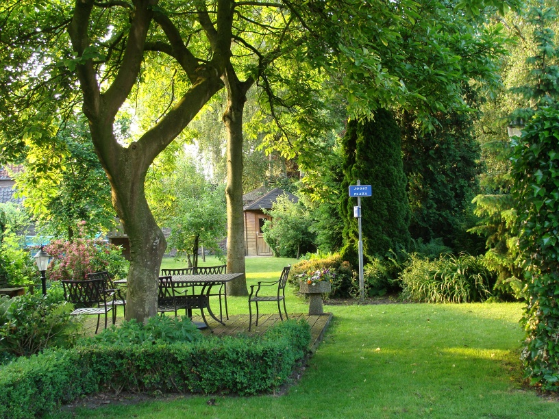
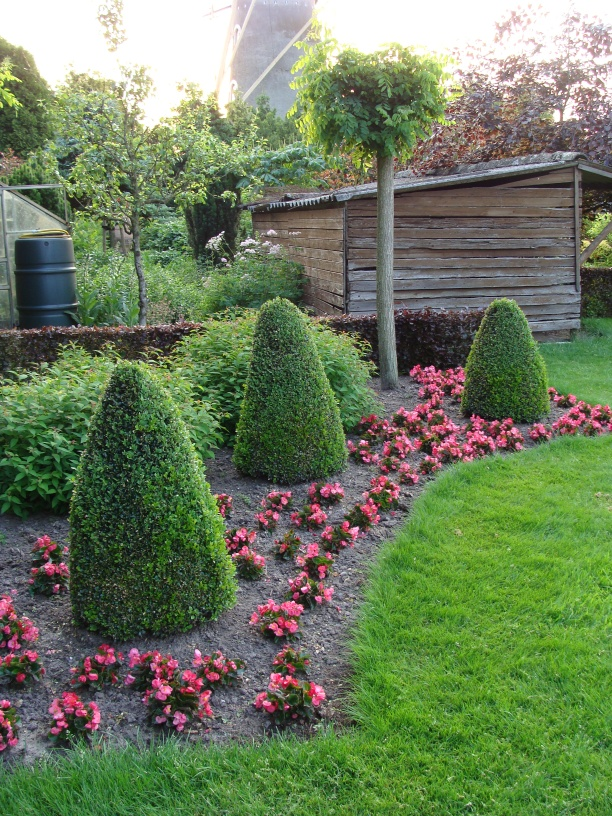
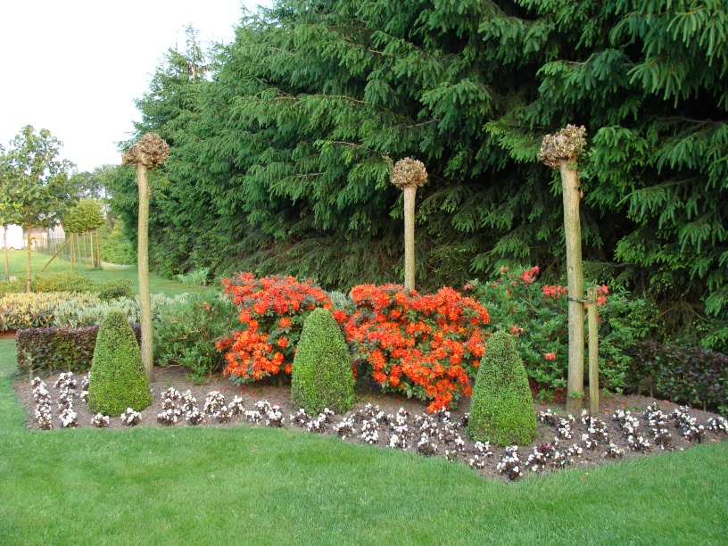
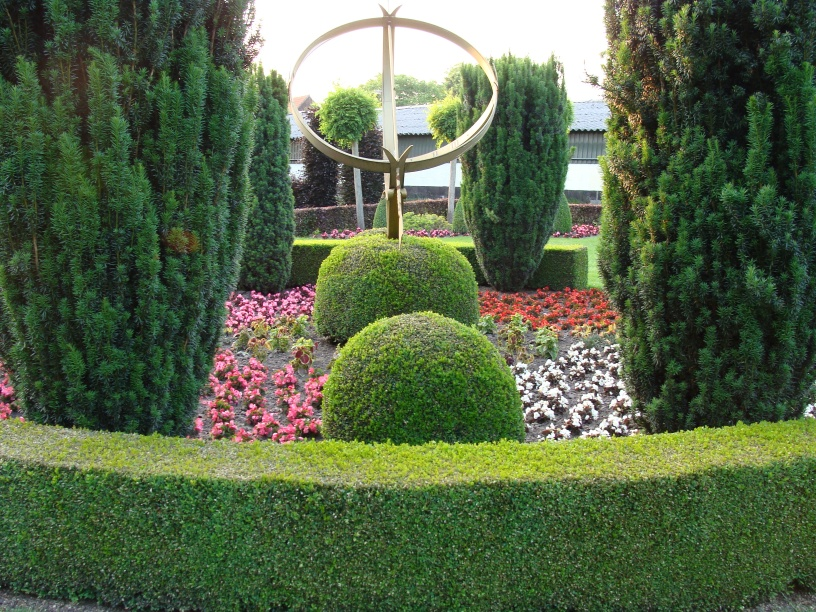
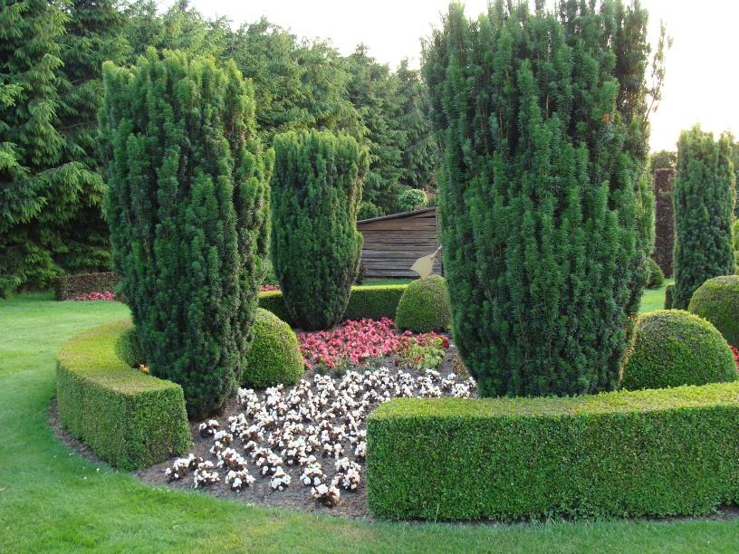
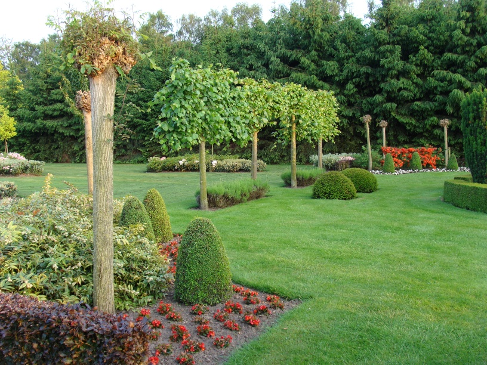
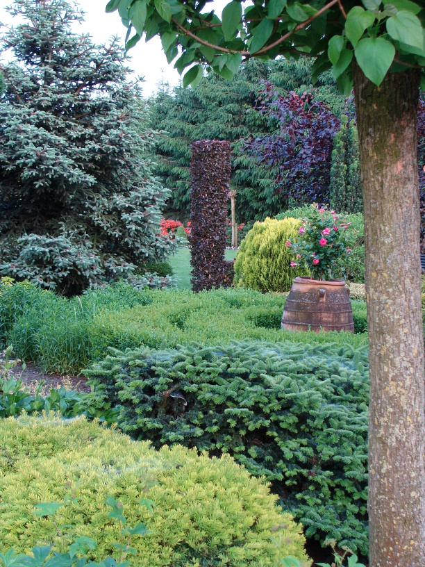

Toe aan een nieuwe tuin? De hoveniers van Schoenmakers kunnen uw tuin of terrein in zijn geheel verzorgen. Ontwerp, aanleg én onderhoud.
Van ontwerp tot onderhoud — uw tuin in vertrouwde handen
Kwaliteit staat bij ons hoog in het vaandel. Wij ontwerpen, leggen aan en onderhouden uw tuin of terrein met persoonlijke aandacht.
1,5 hectare boomkwekerij met haagconiferen en solitairen. Leverancier voor groothandel, bedrijven en particulieren. Snel, accuraat en scherp geprijsd.
Advies en ondersteuning bij werving, personeelsbeleid, teamcoaching, training en projectondersteuning. Maatwerk staat voorop.

Of het nu gaat om ontwerp, aanleg of om onderhoud, u kunt bij ons terecht. Ook voor de inrichting van uw tuin of terrein bent u bij ons aan het juiste adres. Wij leveren bomen uit onze eigen boomkwekerij, aan particulieren en bedrijven.
Schoenmakers Tuinen maakt uw tuin compleet! Graag gaan wij persoonlijk met u in gesprek om maatwerk mogelijk te maken.
Maak kennis met ons teamEen selectie van door ons ontworpen en aangelegde tuinen






Graag gaan wij persoonlijk met u in gesprek om maatwerk mogelijk te maken. Neem vrijblijvend contact op.